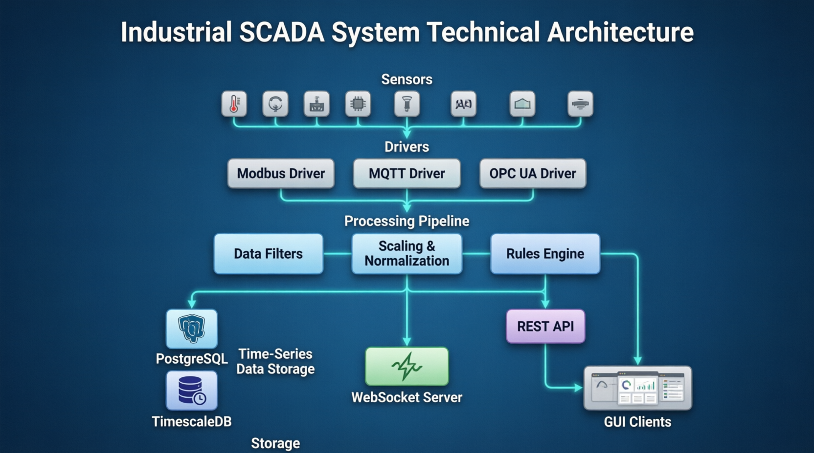

⚙ Tag Core — مستندات فنی
نسخه 0.1.0 | آخرین بهروزرسانی: August 2026 | Qt 5.14.2 / MinGW 7.3 / Windows
۱. نمای کلی پروژه
Tag Core یک هسته مرکزی SCADA/Historian است که دادههای صنعتی را از درایورهای مختلف دریافت، پردازش، ذخیره و از طریق API های WebSocket و REST در اختیار GUI های مستقل قرار میدهد.
دریافت داده از Modbus TCP/RTU، MQTT، Simulator و OPC UA
Scaling، Filtering، Rounding، Deadband و Exception Reporting
۹ نوع آلارم با hysteresis، delay و severity
TimescaleDB با Continuous Aggregates، Compression و Retention
WebSocket (real-time) + REST (CRUD/Query) + Command Channel
داشبوردهای file-based با پشتیبانی QML/HTML/JSON
معماری سیستم

جریان داده (Data Flow)
فناوریها
| بخش | فناوری | توضیح |
|---|---|---|
| زبان | C++ (Qt 5.14.2) | MinGW 7.3 64-bit / Windows |
| دیتابیس | PostgreSQL + TimescaleDB | درایور QPSQL |
| Build | qmake (.pro) | QT += core sql network serialport qml websockets |
| MQTT | qmqtt | کتابخانه خارجی |
| OPC UA | open62541 | در حال build |
| WebSocket | Qt WebSockets | پورت 8081 |
| REST | QTcpServer (custom HTTP) | پورت 8082 |
۲. قابلیتهای Core
Processing Pipeline
| ماژول | کارکرد | وضعیت |
|---|---|---|
| ScalingEngine | linear + min_max + reverseScale برای write | ✅ |
| SoftwareFilterChain | moving_average, exponential, median, debounce, outlier, rate_limiter | ✅ |
| StorageExceptionFilter | deadband + heartbeat + quality bypass | ✅ |
| Rounding | engineering_decimals = 4 | ✅ |
| BatchHistorianWriter | transaction-based insert | ✅ |
| CurrentStateWriter | batch upsert به tag_current_state | ✅ |
Rule Engine (۹ نوع آلارم)
HighHigh / High / Low / LowLow با hysteresis + on/off delay
خارج از بازه مجاز
تغییر سریع مقدار
ثابت ماندن مقدار
وضعیت دیجیتال
کیفیت نامعتبر داده
Severity ها: critical / high / medium / low / info + Alarm Events + Acknowledgment
درایورها
| درایور | پروتکل | قابلیتها | وضعیت |
|---|---|---|---|
| SimulatorDriver | شبیهسازی | sine / bad_quality / stuck | ✅ |
| ModbusTcpDriver | Modbus TCP | FC3/4/5/6/16، Batch Read | ✅ |
| ModbusRtuDriver | Modbus RTU | QSerialPort، CRC16، Batch Read | ✅ |
| MqttDriver | MQTT | subscribe، JSON/raw payload | ✅ |
| OpcUaDriver | OPC UA | open62541 | 🚧 TODO |
۳. لایه API
لایه API شامل دو سرور مجزا است:
| سرور | پورت | کاربرد |
|---|---|---|
| WebSocket Server | 8081 | داده real-time، subscribe، command |
| REST API Server | 8082 | CRUD، Query، گزارش، داشبورد |
WebSocket Server
اتصال پایه:
ws://127.0.0.1:8081/ws/...
کانالهای WebSocket
| کانال | کاربرد | GUI هدف |
|---|---|---|
/ws/alarms/analog | آلارمهای آنالوگ | GUI آلارم آنالوگ |
/ws/alarms/digital | آلارمهای دیجیتال | GUI آلارم دیجیتال |
/ws/alarms/all | همه آلارمها | کنترل پنل |
/ws/tags/batch?ids=1,2,3 | آپدیت تگها (batch) | گراف آنلاین |
/ws/dashboard/{id}?ids=... | داشبورد | صفحات کاربر |
/ws/system/status | وضعیت سیستم | کنترل پنل |
پیامهای کنترلی (بعد از اتصال)
{ "op": "subscribe", "tags": [1,2,3] }
{ "op": "subscribe", "channel": "alarms/analog" }
{ "op": "unsubscribe", "tags": [3] }
{ "op": "options", "delivery": "batch" } // یا "event"
{ "op": "get_snapshot", "tags": [1,2,3] }
{ "op": "ping" }
پیامهای سرور
| type | توضیح |
|---|---|
hello | بعد از اتصال، شامل session و تنظیمات |
tags.snapshot | مقادیر فعلی از tag_current_state |
tag.update | آپدیت یک تگ (حالت event) |
tags.batch | چند آپدیت در یک پیام (حالت batch) |
alarm.event | رویداد آلارم با category (analog/digital) |
system.status | وضعیت سیستم |
response | پاسخ به command |
// نمونه tags.batch { "type": "tags.batch", "ts": "2026-08-11T12:00:00.100Z", "updates": [ { "type":"tag.update", "tag_id":1, "value":23.4, "quality":"good" } ] }
Command Channel (Request/Response)
{ "type":"command", "id":"req-1", "op":"write_tag",
"payload":{ "tag_id":1002, "value":55.0 } }
| op | کارکرد | payload |
|---|---|---|
write_tag | نوشتن مقدار به تگ | {tag_id, value} |
ack_alarm | تأیید آلارم | {alarm_id, user_name} |
get_current | مقادیر فعلی چند تگ | {tag_ids:[...]} |
reload_drivers | بارگذاری مجدد درایورها | {} |
start_driver | start درایور خاص/همه | {driver_id} یا {} |
stop_driver | stop درایور خاص/همه | {driver_id} یا {} |
list_drivers | لیست و وضعیت درایورها | {} |
load_dashboard | لود داشبورد + tag_ids | {dashboard_id} |
REST API Reference
Tags
| Method | Endpoint | توضیح |
|---|---|---|
| GET | /api/v1/tags | لیست همه تگها |
| GET | /api/v1/tags/{id} | جزئیات یک تگ |
| POST | /api/v1/tags | ساخت تگ جدید |
| PUT | /api/v1/tags/{id} | ویرایش تگ |
| DEL | /api/v1/tags/{id} | حذف تگ |
| GET | /api/v1/tags/{id}/current | مقدار فعلی |
| GET | /api/v1/tags/{id}/history | تاریخچه (from/to/interval/limit) |
Alarms / Drivers / System
| Method | Endpoint | توضیح |
|---|---|---|
| GET | /api/v1/alarms?limit&offset | لیست آلارمها |
| POST | /api/v1/alarms/{id}/ack | تأیید آلارم |
| GET | /api/v1/drivers | لیست درایورها |
| GET | /api/v1/system/status | وضعیت سیستم (public) |
| GET | /api/v1/health | health check (public) |
Dashboard API (File-based)
| Method | Endpoint | توضیح |
|---|---|---|
| GET | /api/v1/dashboards | لیست داشبوردها |
| GET | /api/v1/dashboards/{id} | metadata داشبورد |
| POST | /api/v1/dashboards | ساخت داشبورد |
| PUT | /api/v1/dashboards/{id} | ویرایش metadata |
| DEL | /api/v1/dashboards/{id} | حذف داشبورد |
| GET | /api/v1/dashboards/{id}/content | محتوای فایل (QML/HTML/JSON) |
| PUT | /api/v1/dashboards/{id}/content | آپدیت محتوا (با validation) |
| GET | /api/v1/dashboards/{id}/resources | لیست منابع |
انواع داشبورد: simple (JSON)، qml، html. فایلها در پوشه dashboards/{id}/ ذخیره میشوند.
dashboards/
├── 1/
│ ├── dashboard.qml # یا .html / .json
│ └── resources/
└── 2/
└── dashboard.json
Report Generation
| Method | Endpoint | Parameters |
|---|---|---|
| GET | /api/v1/reports/tag-history | tag_ids, from, to, interval, limit, format |
| GET | /api/v1/reports/alarms | from, to, severity, state, tag_id, limit, format |
| GET | /api/v1/reports/daily-summary | tag_ids, date, format |
فرمت خروجی: json یا csv (با BOM برای Excel). interval ها: raw, 1 minute, 5 minutes, 1 hour, 1 day
# نمونه دانلود CSV
curl "http://127.0.0.1:8082/api/v1/reports/tag-history?tag_ids=1,2&interval=1%20minute&format=csv" -o report.csv
Authentication
فعالسازی از دیتابیس:
UPDATE system_settings SET value_text='true' WHERE key='api.auth.enabled';
ارسال API Key:
curl http://127.0.0.1:8082/api/v1/tags -H "X-API-Key: dev-key-123" curl "http://127.0.0.1:8082/api/v1/tags?api_key=dev-key-123"
مسیرهای همیشه عمومی: /api/v1/health و /api/v1/system/status
۴. راهنمای تست
WebSocket با wscat
wscat -c "ws://127.0.0.1:8081/ws/tags/batch?ids=1,2,3"
REST با PowerShell
Invoke-RestMethod -Uri "http://127.0.0.1:8082/api/v1/tags" Invoke-RestMethod -Uri "http://127.0.0.1:8082/api/v1/tags/1/current"
ساخت تگ (PowerShell)
$body = @{ tag_id=9001; tag_name="Test"; source_type="simulator";
data_type="float"; sim_profile="sine"; driver_id=1; enabled=$true } | ConvertTo-Json
Invoke-RestMethod -Uri "http://127.0.0.1:8082/api/v1/tags" -Method Post `
-Body $body -ContentType "application/json"
۵. عیبیابی
| مشکل | علت | راهحل |
|---|---|---|
خطای connect undeclared | کلاس از QObject ارث نمیبرد | ارثبری از QObject + ماکرو Q_OBJECT |
toInteger not found | Qt 5.15+ | از toVariant().toLongLong() استفاده کن |
| تگ جدید current ندارد | درایور آن را نمیشناسد | restart یا reload_drivers |
| curl در cmd خطا میدهد | single-quote | از PowerShell یا -d @file.json استفاده کن |
| داشبورد not found | ستون config در query | حذف config و استفاده از dashboard_type |
۶. مراحل بعدی
Login/JWT، Role-based access (admin/operator/viewer)
داشبوردهای از پیش تعریف شده با پارامتر
HTTPS و WSS برای production
OpenAPI/Swagger spec